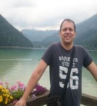

-
Természetjárás
Szabadidőmben szívesen járom a természetet, gyalog vagy akár kerékpáron.
Feltöltődésre nekem tökéletes hely lehet akár egy tópart is.
Az alföldön és a hegyekben tett kirándulások alkalmával egyaránt megtalálom a természet
szépségeit, ami a tökéletes kikapcsolódást jelenti számomra.
Az egyik kedvencem egy biciklis-hajós tó körüli túra Tirolban, amiről egy kis videó is készült.